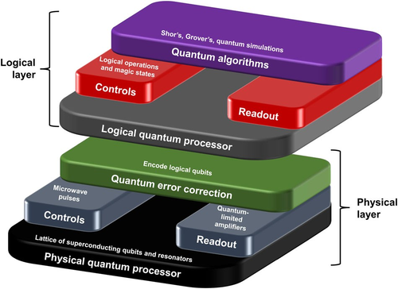

منصات / مكتبات الحوسبة الكمومية
مع الإهتمام المتزايد بالحوسبة الكمومية ، هناك زيادة في عدد المكتبات وأدوات التطوير لهذا المجال. هناك بيئات عمل ومنصات محاكاة للدوائر الكمومية في أغلب لغات البرمجة الشهيرة مثل Python, C/C++, Java
أغلب مراكز البحث ركزت على لغة python كلغة أساسية في البرمجة الكمومية , وذلك لسهولة التعامل معها

الرسم تخطيطي لبنية مكدس الحوسبة الكمومية, والتي تتراوح بين الخوارزميات والتطبيقات الكمومية (Quantum Algorithms) على أعلى مستوى, إلى المعالجات الفيزيائية الكمومية (Physical Quantum Processor) في أدنى مستوى
تقع العديد من المكونات بين هذه الطبقات مثل التحكم والقراءة و- في المستقبل - وحدات تصحيح الخطأ الكمومي. لغات البرمجة الكمومية Quantum programming languages(QPL)تتعامل مع المستوى الأعلى من المكدس , تتكون اللغة الكمومية من تعليمات منخفضة المستوى(low-level instructions) تشير إلى البوابات التي يجب أن تعمل على أي كيوبت.ولصعوبة التعامل مع هذه التعليمات منخفضة المستوى فإننا نستخدم لغات البرمجة المتقدمة مع استعمال مكتبات كمومية
وأمثلة على هذه المكتبات أو المنصات
Cirq
| المؤسسة | |
|---|---|
| v0.1 on April 17, 2018 | تاريخ الاصدار |
| Yes | مفتوح المصدر؟ |
| cirq | التوثيق |
| Mac, Windows, Linux | نظام التشغيل |
| Python | لغة البرمجة |
"""Simple program in Cirq."""
# Import the Cirq package
import cirq
# Pick a qubit
qubit = cirq.GridQubit(0, 0)
# Create a circuit
circuit = cirq.Circuit(
cirq.X(qubit), # NOT.
cirq.measure(qubit, key=’m’) # Measurement
)
# Display the circuit
print("Circuit:")
print(circuit)
# Get a simulator to execute the circuit
simulator = cirq.Simulator()
# Simulate the circuit several times
result = simulator.run(circuit, repetitions=10)
# Print the results
print("Results:")
print(result)
Qiskit
| IBM | المؤسسة |
|---|---|
| 0.1 on March 7, 2017 | تاريخ الاصدار |
| Yes | مفتوح المصدر؟ |
| qiskit | التوثيق |
| Mac, Windows, Linux | نظام التشغيل |
| Python | لغة البرمجة |
| OpenQASM | اللغة الكمومية |
"""Simple program in Qiskit."""
# Import the Qiskit package
import qiskit
# Create a quantum register with one qubit
qreg = qiskit.QuantumRegister(1, name=’qreg’)
# Create a classical register with one qubit
creg = qiskit.ClassicalRegister(1, name=’creg’)
# Create a quantum circuit with the above registers
circ = qiskit.QuantumCircuit(qreg, creg)
# Add a NOT operation on the qubit
circ.x(qreg[0])
# Add a measurement on the qubit
circ.measure(qreg, creg)
# Print the circuit
print(circ.draw())
# Get a backend to run on
backend = qiskit.BasicAer.get_backend("qasm_simulator")
# Execute the circuit on the backend and get the measurement results
job = qiskit.execute(circ, backend, shots=10)
result = job.result()
# Print the measurement results
print(result.get_counts())
Forest
| Rigetti | المؤسسة |
|---|---|
| v0.0.2 on Jan 15, 2017 | تاريخ الاصدار |
| Yes | مفتوح المصدر؟ |
| Link | التوثيق |
| Mac, Windows, Linux | نظام التشغيل |
| Python | لغة البرمجة |
| Quil | اللغة الكمومية |
"""Simple program in pyQuil."""
# Import the pyQuil library
import pyquil
# Create a quantum program
prog = pyquil.Program()
# Declare a classical register
creg = prog.declare("ro", memory_type="BIT", memory_size=1)
# Add a NOT operation and measurement on a qubit
prog += [
pyquil.gates.X(0),
pyquil.gates.MEASURE(0, creg[0])
]
# Print the program
print("Program:")
print(prog)
# Get a quantum computer to run on
computer = pyquil.get_qc("1q-qvm")
# Simulate the program many times
prog.wrap_in_numshots_loop(10)
# Execute the program on the computer. NOTE: This requires the QVM
to be running
result = computer.run(prog)
# Print the results
print(result)
Quantum Development Kit
| Microsoft | المؤسسة |
|---|---|
| 0.1.1712.901 on Jan 4, 2018 | تاريخ الاصدار |
| Yes | مفتوح المصدر؟ |
| Link | التوثيق |
| Mac, Windows, Linux | نظام التشغيل |
| Q# | اللغة الكمومية |
namespace Quantum.Simple
{
// Importing the libraries
open Microsoft.Quantum.Primitive;
open Microsoft.Quantum.Canon;
// Sets a qubit in a desired state
operation Set(desired_state: Result, qubit: Qubit) : Unit {
let current = M(qubit);
if (current != desired_state) {
X(qubit);
}
}
// Executes the NOTandMeasure circuit for an input number
// of repetitions and returns the number of ones measured
operation NotAndMeasure(repetitions: Int) : Int {
// Variable to store the number of measured ones
mutable num_ones = 0;
SECTION 6.5 Quantum Development Kit 79
// Get a qubit to use
using (qubit = Qubit()) {
// Loop over the desired number of repetitions
for (test in 1..repetitions) {
// Get a qubit in the zero state
Set(Zero, qubit);
// Perform a NOT operation
X(qubit);
// Measure the qubit
let res = M (qubit);
// Keep track of the number of ones we measured
if (res == One) {
set num_ones = num_ones + 1;
}
}
// "Released qubits" must be in the zero state to avoid a
System.AggregateException
Set(Zero, qubit);
}
// Return the number of ones measured
return num_ones;
}
}
المصادر: Jack D. Hidary - Quantum Computing_ An Applied Approach-Springer (2021). https://www.nature.com/articles/s41534-016-0004-0